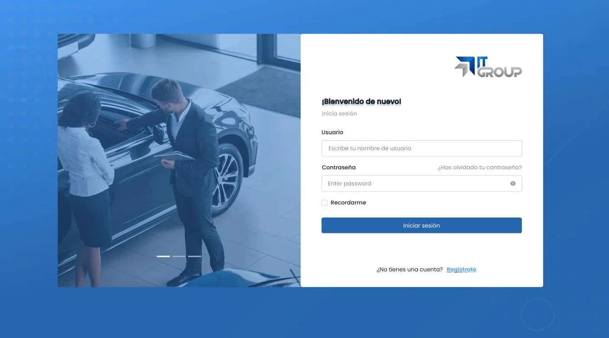
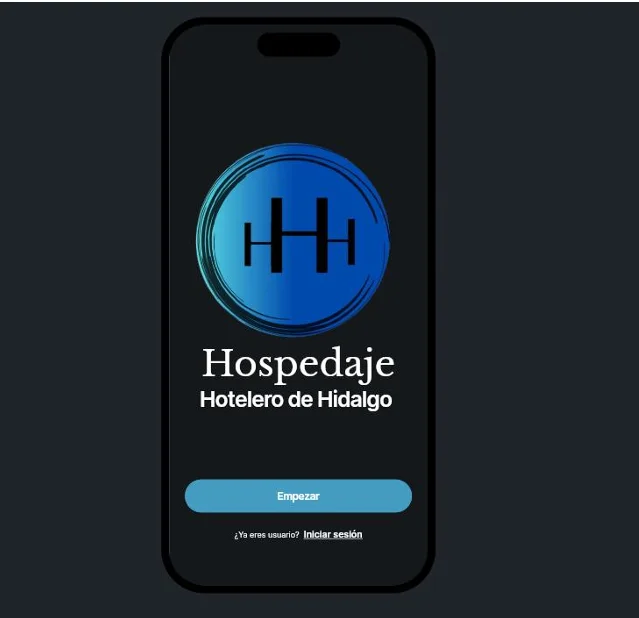

Desarrolladora de Software
Título: Técnico Superior Universitario en Tecnologias de la Informacion Area Desarrollo de Software Multiplataforma. Mi nombre es Belinda Salas Angeles, actualmente estudiante de Ingeniería en Desarrollo y Gestión de Software en la Universidad Tecnológica de la Sierra Hidalguense. Mi pasión por la programación comenzó cuando cursé un curso de informatica, donde aprendi muchas cosas interesantes del desarrollo de software, tengo un titulo en Técnico Superior Universitario en la misma institución, donde adquirí los primeros conocimientos sobre desarrollo web, bases de datos y gestión de proyectos. Actualmente, me enfoco en mejorar mis habilidades en tecnologías como JavaScript, HTML, CSS, y frameworks modernos como React y Node.js. Busco siempre innovar y crear soluciones eficientes que impacten positivamente en los usuarios y las empresas.

